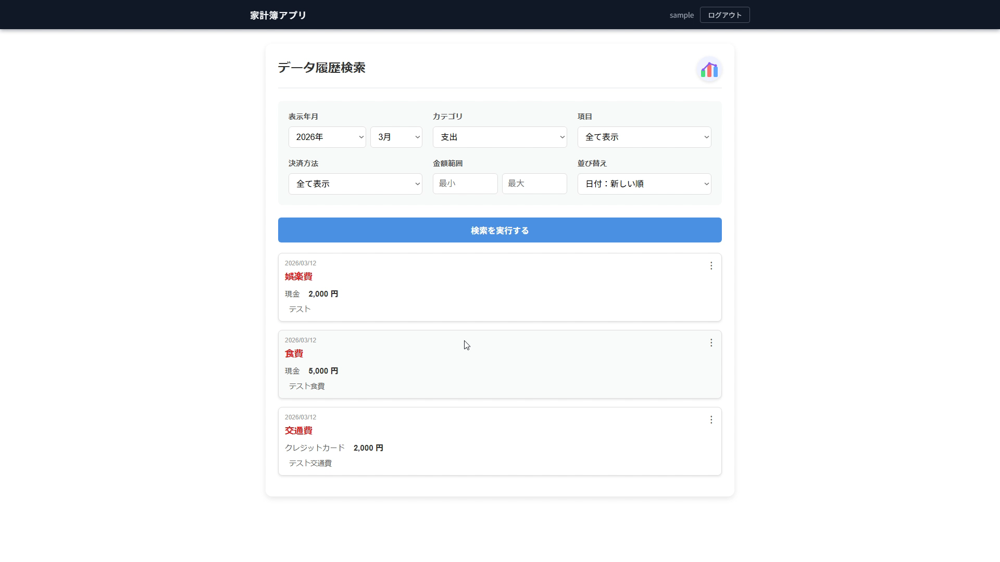
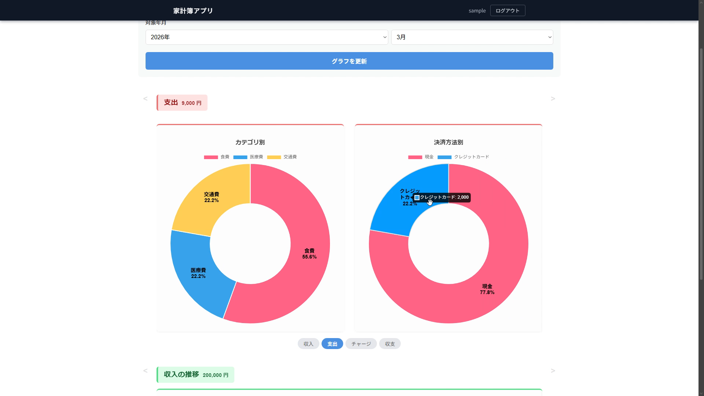
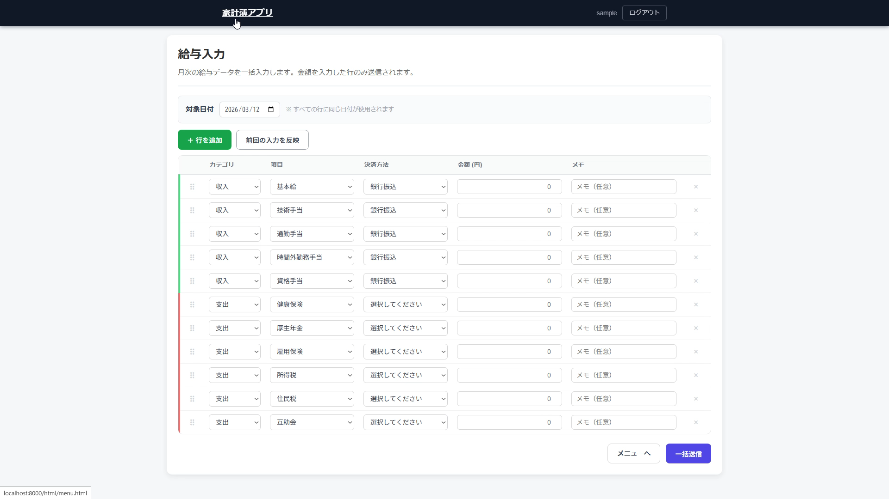
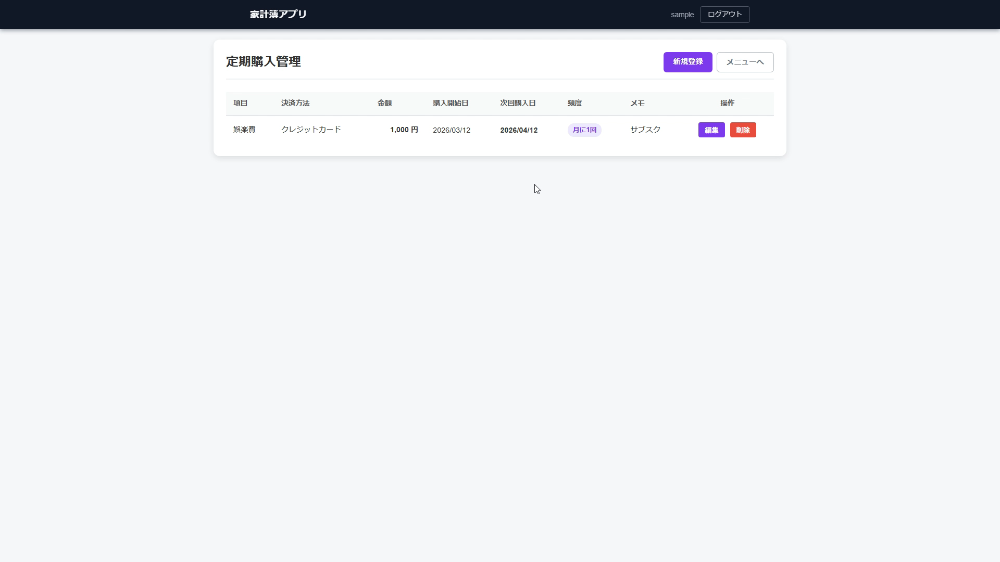
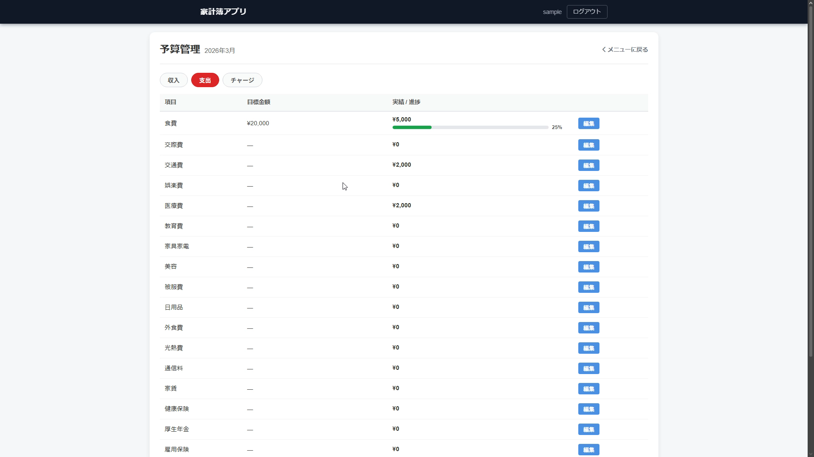

家計簿アプリ
Firebase・GAS を活用したWebベースの家計簿管理アプリ
| 実装期間 | 約1か月 |
|---|---|
| 使用言語 | HTML / CSS / JavaScript |
| 使用技術 |
Firebase Authentication Firebase Firestore Firebase Hosting Chart.js GAS（Google Apps Script） LINE Messaging API |
デモ動画
概要
Firebase を利用したWebアプリの家計簿管理システムです。
メール/パスワード認証によるログイン機能を持ち、収支の記録・予算の設定・定期購入の管理などを一元管理できます。
Chart.js を用いた収支グラフによりデータを視覚的に確認でき、月ごとの支出傾向を把握することができます。
GAS のトリガー機能を活用し、定期購入（サブスクリプション）の自動登録を実装しています。
また、月の支出が設定した予算を超えた際に LINE Messaging API を通じて LINE に通知が届く機能も実装しています。
主な機能
- メール/パスワードによるユーザー認証（Firebase Authentication）
- 収入・支出の記録（カテゴリ別管理）
- 月別予算の設定と管理
- 定期購入（サブスクリプション）の登録・一覧・削除
- GAS トリガーによるサブスクリプションの自動登録
- 予算超過時の LINE 通知（LINE Messaging API）
- 給与情報の管理
- 収支データのグラフ可視化（Chart.js）
- 履歴の検索・管理
スクリーンショット
メインメニュー
カード型グリッドレイアウトで8つの機能へ素早くアクセスできるナビゲーション画面。
収入・支出・チャージの入力、履歴検索、定期購入管理、給与入力、予算管理の各ページへ遷移できる。
管理者アカウントでログインするとマスター管理メニューも表示される。

データ履歴検索・管理画面
年月・カテゴリ（収入／支出／チャージ）・項目・決済方法・金額範囲での絞り込み検索が可能。
日付新順/古順・金額高順/低順の並び替えにも対応。
各行からインライン編集・削除ができ、グループ共有データと自分のデータを区別して表示する。

グラフ・データ分析画面
Chart.js を用いて収支データを可視化する分析画面。
収入・支出・チャージ・収支バランスの4種類をカルーセルで切り替え表示し、カテゴリ別の円グラフ・決済方法別のドーナツグラフ・日別/月別の折れ線グラフを確認できる。
スワイプ操作にも対応し、月次集計データを元に高速表示する。

給与入力画面
基本給・各種手当・社会保険料などを一括で入力できる画面。
デフォルトで8行（収入系5行・控除系3行）が用意されており、行の追加・削除・ドラッグ&ドロップによる並び替えが可能。
「前回の入力を反映」ボタンにより localStorage に保存した前回の内容を即座に復元でき、毎月の入力を効率化できる。

定期購入管理画面
収入・支出・チャージのサブスクリプションを登録・管理する画面。
項目・決済方法・金額・開始日・頻度（日次／週次／月次／年次）を設定すると次回購入日が自動計算される。
登録データは GAS スプレッドシートと連携し、GAS の日次トリガーにより設定した頻度で自動的に収支へ計上される。

予算管理画面
収入・支出・チャージのタブを切り替えて項目ごとに月別予算を設定できる画面。
実績と目標をプログレスバーで比較表示し、支出が予算の80%を超えると橙色、超過すると赤色で警告する。
支出が予算を超えた際は LINE Messaging API を通じて LINE に自動通知が届く。
